算法文档
软硕163 周伯威 2016213588
算法文档1. 定义1.1 论文中三角剖分的定义1.2 维基百科中三角剖分的定义1.3 上述两定义的比较1.4 空圆盘定义的问题2. 算法2.1 论文算法2.2 算法修正2.3 算法效率优化2.4 算法进一步修正2.5 新算法证明3. 算法复杂度3.1 论文算法3.2 修正算法3.3 正多边形的情况3.3.1 论文算法3.3.2 修正算法
1. 定义
1.1 论文中三角剖分的定义
... 尽管有多种方法实现点集P的三角剖分，但是俄国数学家Delaunay在1934年证明，必定存在且仅存在一种三角剖分(一般称之为Delaunay三角剖分)算法，使得所有三角形的最小内角之和最大。 ... Delaunay三角剖分的一个重要性质就是所谓“空圆盘”性质：对于任意Delaunay三角形，其开式圆盘不包含其他任何节点，所有Delaunay三角形互不重叠，且完整地覆盖整个问题域。
1.2 维基百科中三角剖分的定义
在 數學 和 計算幾何 領域, 平面上的點集 P 的 德勞內三角化 是一種 三角剖分 DT(P)，使得在 P 中沒有點嚴格處於 DT(P) 中任意一個三角形 外接圓 的內部。Delaunay 三角化 最大化了此三角剖分中三角形的最小角，換句話，此算法儘量避免出現「極瘦」的三角形。
1.3 上述两定义的比较
维基百科中给出的定义是论文中所谓空圆盘性质，而对于最大化最小角没有给出具体的说明，论文的定义中则明确指出了Delaunay算法使所有三角形最小内角之和最大。
下面给出一个反例说明论文中的两个定义是矛盾的。

如图，四边形是带剖分图形，满足:
- 是以为直角的等腰直角三角形;
- 是以为顶角的等腰三角形;
- 点位于外接圆内。
于是，按照最小角之和最大的定义，若切开边，则最小角之和为; 若切开边则最小角之和为。后者小于前者，于是应该切开。
但是此时点位于外接圆内，这便与另一定义矛盾。
所以论文中给出的两个定义中至少有一个是错误的。根据维基百科定义，可认为定义一错误。
1.4 空圆盘定义的问题
需要注意的是维基百科的定义是针对于点集的，而未规定多边形边界。当有多边形限制的时候此定义有不足之处，例如:

多边形下方的三角剖分用黄线表示，但此时点位于的外接圆内。如果换成平面点集，则可换成剖分来避免破坏性质，但是内环的限制使得这种剖分不成立。
所以，对于多边形的三角剖分问题，三角剖分的定义应修正为: 任意一个三角形的外接圆内部不包含其他顶点，除非该顶点与三角形某两顶点构成的三角形与多边形边界相交。
2. 算法
2.1 论文算法

以上是论文给出的算法，没给证明，且叙述十分复杂，简单来说就是:
取出多边形一条边
从所有顶点中选出符合下列条件的顶点，作为候选顶点:
- 顶点位于边左侧
- 顶点与边端点连线不与多边形其他边相交
求出各个候选顶点与边构成的三角形的外接圆半径，选取使该半径最小的候选顶点，将构造的三角形作为一个剖分三角形，并从多边形中排除，更新边列表
重复上述步骤至边表为空
2.2 算法修正
论文算法有一个显而易见的问题，就是候选顶点的判断条件不充分。例如:

上图中，计算边时，点是一个符合条件的候选顶点，但是显然不能作为被剖分的三角形。
因此，候选顶点条件应加上判断，顶点与边构成的三角形内不包含其他顶点。
2.3 算法效率优化
上述算法的时间复杂度是，尽管作者声称是的。但是，如果先判断外接圆半径是否已经比当前最优值小()，则可能避免判断候选条件()，从而加快计算。根据实验，加入这个优化之后，当边数较多时，计算效率提高了数十倍。
2.4 算法进一步修正
我实现的第一个版本即是上述修正后的算法，但是后来发现该算法仍有严重问题。例如，还是这个图:
选取边时，、都是符合条件的候选顶点，的外接圆半径更小，于是连接。但如果开始选择的是边，、是符合条件的候选顶点，的外接圆半径更小，应当要连接边。这与之前的剖分结果不同，所以算法仍有问题。

根据Delaunay三角剖分的正确定义，候选顶点条件应加上顶点与边构成的三角形的外接圆内部不包含其他顶点，同时，2.2节中新加入的条件可以去除。加上这一判断条件后，因为合法顶点只有一个，无需再存储候选顶点。
2.5 新算法证明
首先，多边形的每条边左边都一定是剖分三角形，下面证明，由上述候选条件选择的第一个三角形可作为剖分三角形:
假设有两个顶点、，它们都能与边构成合法的Delaunay三角形，那么，两个顶点与边分别构成的三角形外接圆内部不包含另一个顶点。假设位于外接圆外部，则有，则位于外接圆内部，这不符合定义，所以点在外接圆上，此时选择、是等价的。所以，如果顶点符合候选顶点条件，那么一定可以作为剖分三角形。
3. 算法复杂度
3.1 论文算法
需要轮的迭代来计算出所有的三角形
计算一条边时，需要枚举其他顶点
- 判断一个顶点是否合法时，需要判断是否与现有边相交
从候选顶点中选取顶点需要时间比较半径大小
因此该算法是的，而非作者宣称的。
3.2 修正算法
计算一个顶点是否合法时，仍需要的时间来枚举其他顶点，因此该算法在最坏情况下仍然是的。
3.3 正多边形的情况
3.3.1 论文算法
没有变化，仍然是。
3.3.2 修正算法
在第二层循环中，每次找到第一个顶点即退出循环，所以复杂度降为。